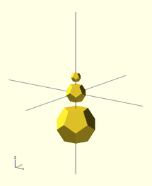
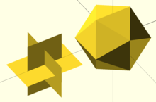
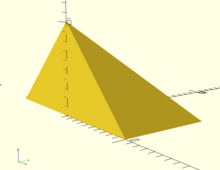
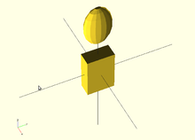
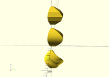
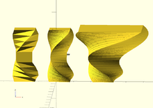
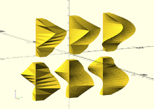

Dodecahedron
//create a dodecahedron by intersecting 6 boxes
module dodecahedron(height)
{
scale([height,height,height]) //scale by height parameter
{
intersection(){
//make a cube
cube([2,2,1], center = true);
intersection_for(i=[0:4]) //loop i from 0 to 4, and intersect results
{
//make a cube, rotate it 116.565 degrees around the X axis,
//then 72*i around the Z axis
rotate([0,0,72*i])
rotate([116.565,0,0])
cube([2,2,1], center = true);
}
}
}
}
//create 3 stacked dodecahedra
//call the module with a height of 1 and move up 2
translate([0,0,2])dodecahedron(1);
//call the module with a height of 2
dodecahedron(2);
//call the module with a height of 4 and move down 4
translate([0,0,-4])dodecahedron(4);
|
 The Dodecahedron as rendered from the example. |
Icosahedron
An icosahedron can be created from three orthogonal golden-ratio rectangles inside a hull() operation, where the golden ratio is .

phi=0.5*(sqrt(5)+1); // golden ratio
// create an icosahedron by intersecting 3 orthogonal golden-ratio rectangles
module icosahedron(edge_length) {
st=0.0001; // microscopic sheet thickness
hull() {
cube([edge_length*phi, edge_length, st], true);
rotate([90,90,0]) cube([edge_length*phi, edge_length, st], true);
rotate([90,0,90]) cube([edge_length*phi, edge_length, st], true);
}
}
// display the 3 internal sheets alongside the icosahedron
edge=10;
translate([-20,0,0]) union() {
cube([edge*phi, edge, 0.01], true);
rotate([90,90,0]) cube([edge*phi, edge, 0.01], true);
rotate([90,0,90]) cube([edge*phi, edge, 0.01], true);
}
icosahedron(edge);
|
 The icosahedron and its internal structure as rendered from the example. |
This icosahedron renders in an edge-up orientation. Rotating this icosahedron by about the Y-axis results in a vertex-up orientation. Rotating by about the X-axis results in a face-up orientation. The edge length is related to the inner diameter (distance between opposite faces) by .


{kind=link}
{kind=link}
Half-pyramid
An upside-down half-pyramid is a useful shape for 3D printing a support for an overhang protruding from a vertical wall. With sloping sides no steeper than 45°, no removable support structure needs to be printed.
While a half-pyramid can be made with a 4-sided cone (using the cylinder primitive) and subtracting a cube from half of it, the shape can be easily made in one operation by a scaled linear extrude of a rectangle having the middle of one edge on the origin.
// Create a half-pyramid from a single linear extrusion
module halfpyramid(base, height) {
linear_extrude(height, scale=0.01)
translate([-base/2, 0, 0]) square([base, base/2]);
}
halfpyramid(20, 10);
|
 The half-pyramid as rendered from the example. |
{kind=link}
Bounding Box
// Rather kludgy module for determining bounding box from intersecting projections
module BoundingBox()
{
intersection()
{
translate([0,0,0])
linear_extrude(height = 1000, center = true, convexity = 10, twist = 0)
projection(cut=false) intersection()
{
rotate([0,90,0])
linear_extrude(height = 1000, center = true, convexity = 10, twist = 0)
projection(cut=false)
rotate([0,-90,0])
children(0);
rotate([90,0,0])
linear_extrude(height = 1000, center = true, convexity = 10, twist = 0)
projection(cut=false)
rotate([-90,0,0])
children(0);
}
rotate([90,0,0])
linear_extrude(height = 1000, center = true, convexity = 10, twist = 0)
projection(cut=false)
rotate([-90,0,0])
intersection()
{
rotate([0,90,0])
linear_extrude(height = 1000, center = true, convexity = 10, twist = 0)
projection(cut=false)
rotate([0,-90,0])
children(0);
rotate([0,0,0])
linear_extrude(height = 1000, center = true, convexity = 10, twist = 0)
projection(cut=false)
rotate([0,0,0])
children(0);
}
}
}
// Test module on ellipsoid
translate([0,0,40]) scale([1,2,3]) sphere(r=5);
BoundingBox() scale([1,2,3]) sphere(r=5);
|
 Bounding Box applied to an Ellipsoid |
{kind=link}
Linear Extrude extended use examples
Linear Extrude with Scale as an interpolated function
//Linear Extrude with Scale as an interpolated function
// This module does not need to be modified,
// - unless default parameters want to be changed
// - or additional parameters want to be forwarded (e.g. slices,...)
module linear_extrude_fs(height=1,isteps=20,twist=0){
//union of piecewise generated extrudes
union(){
for(i = [ 0: 1: isteps-1]){
//each new piece needs to be adjusted for height
translate([0,0,i*height/isteps])
linear_extrude(
height=height/isteps,
twist=twist/isteps,
scale=f_lefs((i+1)/isteps)/f_lefs(i/isteps)
)
// if a twist constant is defined it is split into pieces
rotate([0,0,-(i/isteps)*twist])
// each new piece starts where the last ended
scale(f_lefs(i/isteps))
obj2D_lefs();
}
}
}
// This function defines the scale function
// - Function name must not be modified
// - Modify the contents/return value to define the function
function f_lefs(x) =
let(span=150,start=20,normpos=45)
sin(x*span+start)/sin(normpos);
// This module defines the base 2D object to be extruded
// - Function name must not be modified
// - Modify the contents to define the base 2D object
module obj2D_lefs(){
translate([-4,-3])
square([9,12]);
}
//Top rendered object demonstrating the interpolation steps translate([0,0,25]) linear_extrude_fs(height=20,isteps=4); linear_extrude_fs(height=20); //Bottom rendered object demonstrating the inclusion of a twist translate([0,0,-25]) linear_extrude_fs(height=20,twist=90,isteps=30); |
 Example Linear Extrude of a rectangle with scale following part of a sine curve function |
{kind=link}
Linear Extrude with Twist as an interpolated function
//Linear Extrude with Twist as an interpolated function
// This module does not need to be modified,
// - unless default parameters want to be changed
// - or additional parameters want to be forwarded (e.g. slices,...)
module linear_extrude_ft(height=1,isteps=20,scale=1){
//union of piecewise generated extrudes
union(){
for(i = [ 0: 1: isteps-1]){
//each new piece needs to be adjusted for height
translate([0,0,i*height/isteps])
linear_extrude(
height=height/isteps,
twist=f_left((i+1)/isteps)-f_left((i)/isteps),
scale=(1-(1-scale)*(i+1)/isteps)/(1-(1-scale)*i/isteps)
)
//Rotate to next start point
rotate([0,0,-f_left(i/isteps)])
//Scale to end of last piece size
scale(1-(1-scale)*(i/isteps))
obj2D_left();
}
}
}
// This function defines the twist function
// - Function name must not be modified
// - Modify the contents/return value to define the function
function f_left(x) =
let(twist=90,span=180,start=0)
twist*sin(x*span+start);
// This module defines the base 2D object to be extruded
// - Function name must not be modified
// - Modify the contents to define the base 2D object
module obj2D_left(){
translate([-4,-3])
square([12,9]);
}
//Left rendered object demonstrating the interpolation steps translate([-20,0]) linear_extrude_ft(height=30,isteps=5); linear_extrude_ft(height=30); //Right rendered object demonstrating the scale inclusion translate([25,0]) linear_extrude_ft(height=30,scale=3); |
 Example Linear Extrude of a rectangle with twist following part of a sine curve function |
{kind=link}
Linear Extrude with Twist and Scale as interpolated functions
//Linear Extrude with Twist and Scale as interpolated functions
// This module does not need to be modified,
// - unless default parameters want to be changed
// - or additional parameters want to be forwarded
module linear_extrude_ftfs(height=1,isteps=20,slices=0){
//union of piecewise generated extrudes
union(){
for(i=[0:1:isteps-1]){
translate([0,0,i*height/isteps])
linear_extrude(
height=height/isteps,
twist=leftfs_ftw((i+1)/isteps)-leftfs_ftw(i/isteps),
scale=leftfs_fsc((i+1)/isteps)/leftfs_fsc(i/isteps),
slices=slices
)
rotate([0,0,-leftfs_ftw(i/isteps)])
scale(leftfs_fsc(i/isteps))
obj2D_leftfs();
}
}
}
// This function defines the scale function
// - Function name must not be modified
// - Modify the contents/return value to define the function
function leftfs_fsc(x)=
let(scale=3,span=140,start=20)
scale*sin(x*span+start);
// This function defines the twist function
// - Function name must not be modified
// - Modify the contents/return value to define the function
function leftfs_ftw(x)=
let(twist=30,span=360,start=0)
twist*sin(x*span+start);
// This module defines the base 2D object to be extruded
// - Function name must not be modified
// - Modify the contents to define the base 2D object
module obj2D_leftfs(){
square([12,9]);
}
//Left rendered objects demonstrating the steps effect translate([0,-50,-60]) rotate([0,0,90]) linear_extrude_ftfs(height=50,isteps=3); translate([0,-50,0]) linear_extrude_ftfs(height=50,isteps=3); //Center rendered objects demonstrating the slices effect translate([0,0,-60]) rotate([0,0,90]) linear_extrude_ftfs(height=50,isteps=3,slices=20); linear_extrude_ftfs(height=50,isteps=3,slices=20); //Right rendered objects with default parameters translate([0,50,-60]) rotate([0,0,90]) linear_extrude_ftfs(height=50); translate([0,50,0]) linear_extrude_ftfs(height=50); |
 Example Linear Extrude of a rectangle with twist and scale following part of a sine curve function |
{kind=link}
Rocket
{kind=link}
// increase the visual detail
$fn = 100;
// the main body :
// a cylinder
rocket_d = 30; // 3 cm wide
rocket_r = rocket_d / 2;
rocket_h = 100; // 10 cm tall
cylinder(d = rocket_d, h = rocket_h);
// the head :
// a cone
head_d = 40; // 4 cm wide
head_r = head_d / 2;
head_h = 40; // 4 cm tall
// prepare a triangle
tri_base = head_r;
tri_height = head_h;
tri_points = [[0, 0],
[tri_base, 0],
[0, tri_height]];
// rotation around X-axis and then 360° around Z-axis
// put it on top of rocket's body
translate([0,0,rocket_h])
rotate_extrude(angle = 360)
polygon(tri_points);
// the wings :
// 3x triangles
wing_w = 2; // 2 mm thick
many = 3; // 3x wings
wing_l = 40; // length
wing_h = 40; // height
wing_points = [[0,0],[wing_l,0],[0,wing_h]];
module wing() {
// let it a bit inside the main body
in_by = 1; // 1 mm
// set it up on the rocket's perimeter
translate([rocket_r - in_by,0,0])
// set it upright by rotating around X-axis
rotate([90,0,0])
// set some width and center it
linear_extrude(height = wing_w,center = true)
// make a triangle
polygon(wing_points);
}
for (i = [0: many - 1])
rotate([0, 0, 360 / many * i])
wing();
Horns
{kind=link}
// The idea is to twist a translated circle:
// -
/*
linear_extrude(height = 10, twist = 360, scale = 0)
translate([1,0])
circle(r = 1);
*/
module horn(height = 10, radius = 3,
twist = 720, $fn = 50)
{
// A centered circle translated by 1xR and
// twisted by 360° degrees, covers a 2x(2xR) space.
// -
radius = radius/4;
// De-translate.
// -
translate([-radius,0])
// The actual code.
// -
linear_extrude(height = height, twist = twist,
scale=0, $fn = $fn)
translate([radius,0])
circle(r=radius);
}
translate([3,0])
mirror()
horn();
translate([-3,0])
horn();
Strandbeest
See the Strandbeest example here.